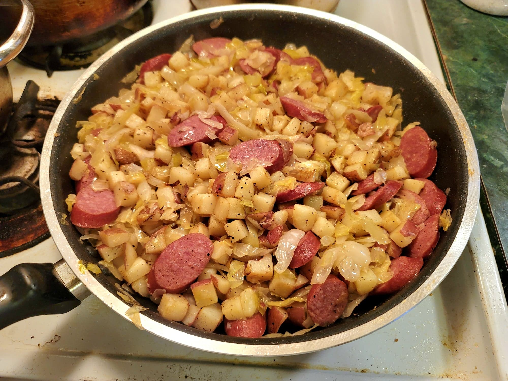

Kielbasa and Sauerkraut

Ingredients:
- 1 lb Kielbasa, sliced diagonally
- 2 tbsp Canola oil
- 6 medium/small Red potatoes, cubed
- 1 Onion, sliced
- 1 lb Sauerkraut, rinsed and drained
- 1/4 tsp Black pepper
Instructions:
- Heat the oil in a large pan over medium heat. Add in the potatoes and sauté until lightly browned, about 7-11 minutes.
- Add in the onions and continue to sauté until translucent, about 7 minutes.
- Add in the kielbasa, sauerkraut, and pepper. Sauté for 4-5 minutes or until heated though. Serve hot.